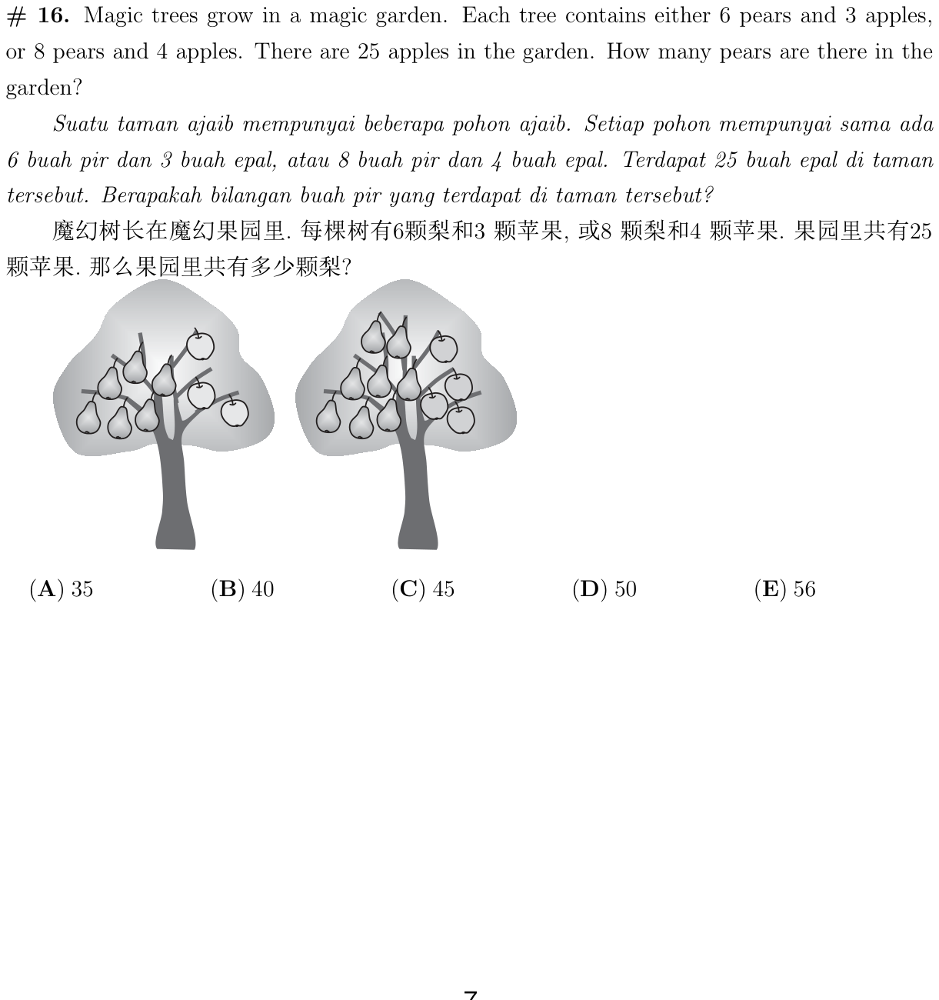
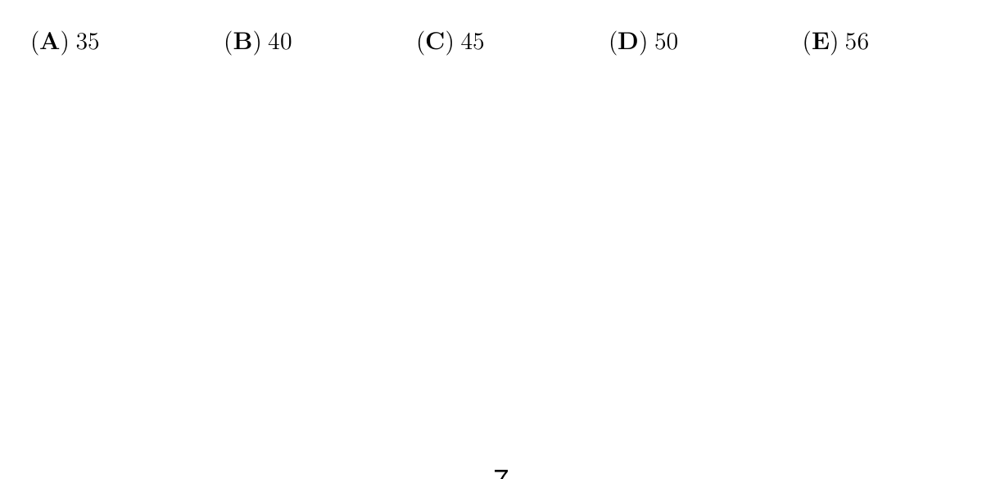

树有 6梨3苹 或 8梨4苹，25 苹 → 多少梨？
Trees 6P+3A or 8P+4A; 25 apples → pears?


苹果按 3 或 4 计，总数 25。解出两种树各几棵，再算梨。
Apples in 3s and 4s totaling 25. Find tree counts, then pears.
想好后选出答案（检查只提示对错，不公布选项字母）：
Then pick an answer (Check only says right/wrong):